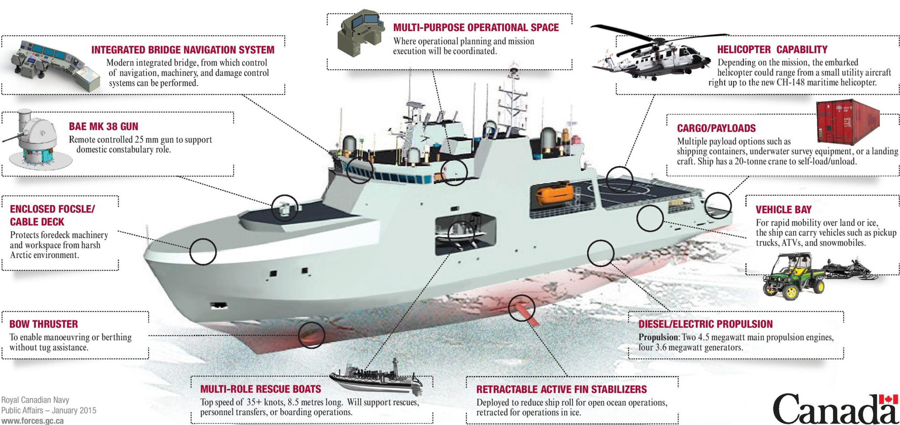

Vice Admiral Henry George DeWolf CBE, DSO, DSC, CD was a Canadian naval officer who was famous as the first commander of HMCS Haida during the Second World War.
Born : 26 June 1903
(Bedford, Nova Scotia)
Died : 18 December 2000
(Ottawa, Ontario)
Y.O.S :1918 - 1916
Features
Departure Displacement
6,600 tonnes
Length
103 m (338 ft)
Beam
19 m (62 ft)
Top Speed
17 knots (31 km/h; 20 mph)
Range
6,800 nautical miles (12,600 km; 7,800 mi)
Crew Capacity
65 crew + 20 additional
Technology

Strategic ImportanceEnhancing Canada's Arctic Sovereignty and Security
Arctic Operations
The Harry DeWolf-class is pivotal in asserting Canada's sovereignty in the Arctic.
Multipurpose Use
Beyond ice operations, these ships are versatile platforms for a range of missions.
International Cooperation
These vessels also play a key role in international collaborations
The Future of Canada’s Maritime Defense
The Harry DeWolf-class ships are more than just vessels; they represent the future direction of Canada’s maritime defense strategy, especially in the context of the changing Arctic landscape.